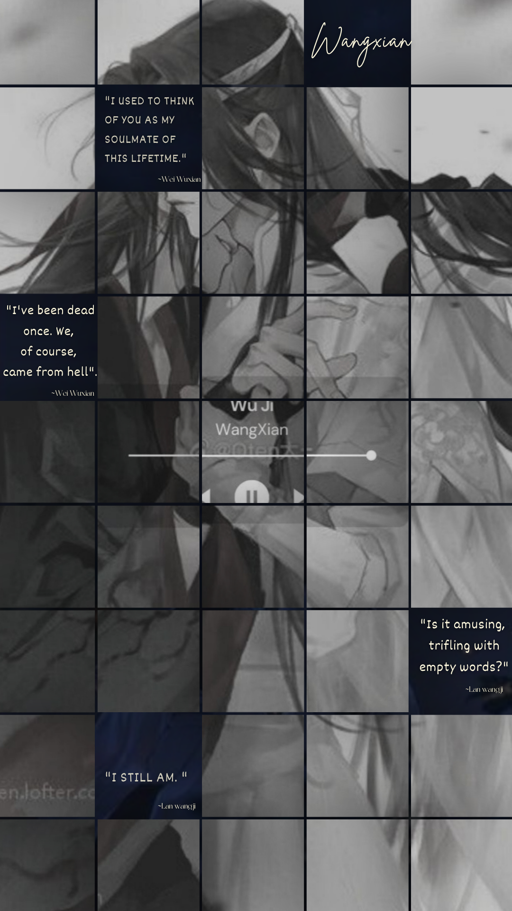
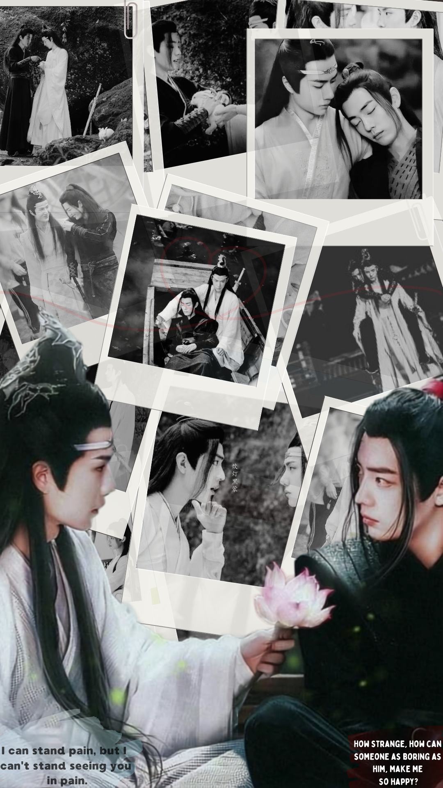
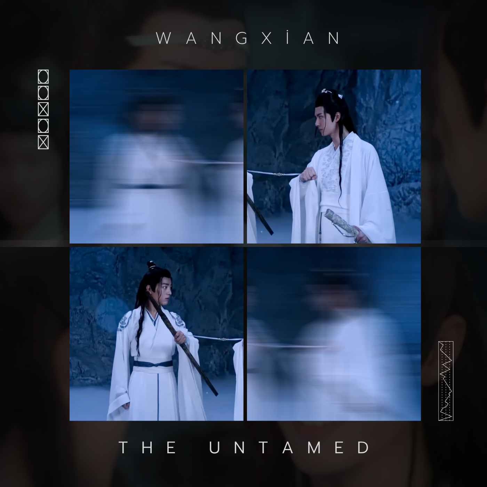
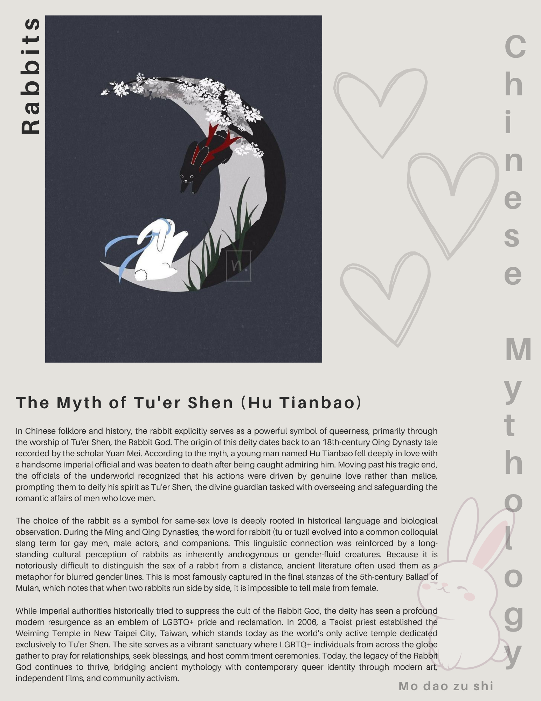

Some memories return as faces. Some return as music.
忘羡
MEMORY / 00
SELECT AN ARCHIVE
Which memory did you keep?
SEALED / 忘
忘
LAN WANGJI ASKS
“What was the melody called?”
the strings wait in silence.
THE UNTAMED ARCHIVE
THE MEMORY OPENS / 00
Wander through what remained.
Move through the room. A memory will answer when you approach it.
hover / focus a memory · click to enter
01 / TIMELINE
A CHRONOLOGY OF REMEMBERING
Before. After. Again.
02 / STORY
TWO PATHS / ONE MELODY
A story told in returns.
Not every memory arrives in order. Some begin with rain. Some with a rooftop. Some with a name spoken after too many years.

This room is for your own storyline notes and scene commentary. Write what happened in your own words, then add why the moment stayed with you. Keeping the prose personal makes the archive feel like a memory book rather than a wiki page.
EDIT ME: open index.html and search for “EDIT ME”. Replace this paragraph with your own storyline.
03 / PICTURES
THE EYE REMEMBERS TOO
Fragments of them.

MEMORY 001 Canva edit by site creator · underlying media belongs to respective rights holders

MEMORY 002 Canva edit by site creator · underlying media belongs to respective rights holdersMEMORY 003 Canva edit by site creator · underlying media belongs to respective rights holders
04 / CHAOS
THE YILING PATRIARCH HAS ENTERED THE CSS
memes. obviously.
Add your own meme files to assets/images. Then duplicate a <figure> from the pictures screen. The dramatic red is intentional. Wei Wuxian was left unsupervised.
05 / QUIZ
AN EXAMINATION IN SIX MEMORIES
問
What kind of cultivator are you?
No correct answers. The archive is only listening.
MEMORY 01 / 06
THE ARCHIVE HAS DECIDED
06 / RABBITS

SYMBOL / MYTH / SOFTNESS
The rabbit archive.
In late-imperial Chinese sources, Tu’er Shen is associated with male same-sex love; modern scholarship also discusses “rabbit” language in histories of male-male sexuality. That broader folklore history is separate from canon, but it gives you a beautiful research lane for a fan archive about rabbit imagery.
RESEARCH NOTE — link your factual sources here before publishing. Suggested starting points are in README.txt.